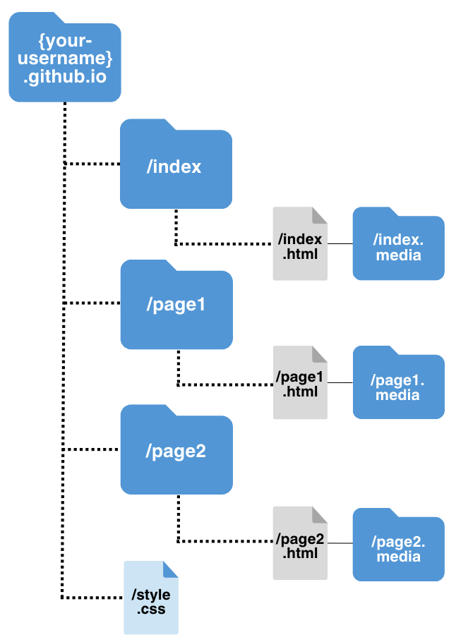

Stage 2: Customize

Edit the HTML
Customize will guide you through adding your own content to your website. Each page has an HTML page. HTML stands for Hypertext Markup Language and it is the standard language that defines the content and structure of web pages. All of your content that you write lives in these ".html" files. HTML is used to create content and CSS is used to style that content. You will edit the CSS in Stage 3 of this tutorial, Stylize.
Prerequisites:
Before you begin editing the HTML, it’s important to understand how the folder structure of your project works. Each page on your website has its own folder that contains the HTML file, a CSS file, and a media folder for the page’s images or videos. You’ll learn more about CSS in the next stage of this tutorial, so don’t worry about this yet.

The HTML page is what you actually visit in a web browser. Think of the folders as a nested structure. Since index.html is “nested” under the pages folder, the URL for the index page of your website will be: https://{your-username}.github.io/index/index.html.
An HTML tag is a word or letter surrounded by angle brackets, < and >. Tags are used to create HTML elements, such as paragraphs or links. Many elements have an opening tag and a closing tag. For example, a p (paragraph) element has a <p> tag, followed by the paragraph text, followed by a closing </p> tag.
Some elements don’t have a closing tag. These are called empty elements. For example, the br element for inserting line breaks is simply written <br>.
| Tag | Meaning |
<!-- --> |
comment (will not appear on the web page output) |
<!DOCTYPEHTML> |
document type |
<meta charset="UTF-8"> |
character encoding (don't worry about this) |
<a> </a> |
hyperlink ex: <a href=” URL LINK HERE”> |
<body> </body> |
text body |
<br> |
single line break |
<code> </code> |
code line |
<head> |
document header |
<html> |
root of html |
<div> </div> |
divider section |
<h1> </h1> |
headers |
<p> </p> |
paragraph |
<img> </img> |
image ex: <img src=”stage1.media/image.png” alt=”alternative text” style=”width=100%”></img> |
The image source, or src, references the location of the image in your project’s folder structure. For example, in ”stage1.media/image.png,” this means the image is inside the “stage1.media” folder.
Everytime you make a change to your code and you want to see what it looks like, you don’t have to wait for GitHub pages to load. Instead, follow these steps to view small changes more efficiently.
1. Navigate to the folder of your GitHub repository on your Desktop.
2. Open the index folder, then double click on the index.html file to open it on your web browser. You should see your index page.
3. Open VSCode and replace line 32 to the following: <h2>About</h2>
4. Go back to your browser with the index.html file opened locally. Refresh the page.
Screenshot of About page.
Despite this easy workaround waiting for GitHub pages to load in order to view updates, you should still push and commit your changes to GitHub regularly. This ensures version control and management with your website files. For a refresh on how to push and commit changes to GitHub, visit the “Push an update to GitHub” section in the Set Up stage.
Steps:
This step covers the renaming conventions for changing pages like, page1 and page2, to your own topics of choice.
1. Right click on the page1 folder in the Explorer menu in VSCode. Rename the folder to your topic of choice. This depends on what type of work you will be showcasing on your website.
For example: school-projects, photography, visual-art, etc.
schoolprojects, school-projects, or school_projects. 2. Expand the folder that you just renamed and repeat the renaming process for the three items it contains. For example, if you renamed the page1 folder to “projects,” the new names of the items in that folder would be: projects.html and projects.media.
3. Click the HTML file in your newly renamed folder to enter into editing mode. Find and replace every "page1" in the HTML file with the new topic you chose. There should be a total of 12 instances of "page1" or "Page 1" in the HTML file.
<a class="active" href="#page1">Page 1</a> with <a class="active" href="#projects">Projects</a>This is how links in the top nav bar work:
4. Save your changes by clicking File > Save or the Cmd + S keyboard shortcut. Then push and commit your changes to GitHub.
5. Repeat steps 1-4 in this section to the page2 folder in your project. Rename everything in the page2 folder and the page2.html file to your second topic of choice.
This section is optional. If you would only like 3 pages on your website (index, page1 equivalent, and page2 equivalent), then skip this section. If you would like to have more than 3 pages, then keep reading. Feel free to revisit this step later on if you change your mind about adding more pages to your website.
1. Right click on your page1 equivalent folder in the Explorer menu in VSCode. Select Duplicate.
2. Repeat steps 1-4 in the previous section to the duplicate folder in your project. Rename everything in the folder and the HTML file to the topic of your choosing.
3. Notice the <div> from line 11-15 in any of the HTML files. The “class” or type of <div> is “topnav.” This represents items in the top navigation bar of your website.
Therefore, Therefore, you have to add the new page(s) you created to this section of every HTML file in your website, so you can navigate between them. Copy and paste this line of code to the HTML file of the new page to add it to the top navigation bar: <a class="active" href="#{pagename}">Page Name</a>
Example of an added page to the top nav in the page1.html file:
4. Save your changes by clicking File > Save or the Cmd + S keyboard shortcut. Then push and commit your changes to GitHub.
Now let’s start adding your own content to the HTML files. We’ll begin working on the simplest page, the index (or home) page.
1. Open the index HTML file. Notice on line 7, the title is what appears in the browser window or tab. As of now, it reads “About | Your Name.” Replace “Your Name” with your actual name. Feel free to change this to whatever you’d like.
2. In the “topnav” class for the navigation menu from lines 11-15, make sure you have included the pages you changed or added. On line 12, feel free to change “About” about to something like “Home.” This is your website, so it’s totally up to you.
Ex: <a class="active" href="#home">Home</a>
Then change all of the {your-username} fields in the links to your actual GitHub username.
3. The main div section starts on line 17. This is a divider called “center,” which keeps all of your content fixed, and centered in the middle of the page. On line 18, change the header 1 value from “Your Name” to your actual name.
Ex: <h1>John Doe</h1>
4. The “nav” section from lines 19-30 represents a block of links. As of now, it includes a link to your GitHub account, your LinkedIn account, your email address, and your resume.
Replace all of the fields surrounded by curly brackets with your own information. For example, “mailto:johndoe@gmail.com” (removing the curly brackets).
5. On line 32 you can see the first header2 value. As of now, it reads “About,” but feel free to change this to whatever you’d like. For example: About Me, Who Am I?, etc.
6. On line 33, the first paragraph value starts. This is just filled with some sample text, so delete everything between <p> and </p>. Now write your own paragraph that introduces yourself.
7. Save your changes by clicking File > Save or the Cmd + S keyboard shortcut. Then push and commit your changes to GitHub.
Now that the index page has your own information, let's customize the rest of the HTML files.
1. Open any one of the HTML files that are not the index file that we just edited.
2. In the “topnav” class for the navigation menu from lines 11-15, make sure you have included the pages you changed or added. Change all of the {your-username} fields in the links to your actual GitHub username (removing the curly brackets).
3. The header1 value lives on line 19. This is the main title of your page. Right below this line of code, there is some placeholder paragraph text. Delete everything between <p> and </p> and replace it with a description of what the page will be about. For example, if my page was called “School Projects,” the description of the page might be: The following projects were completed during my time as an undergraduate student at Cal Poly San Luis Obispo.”
Repeat this step with the first header2 value and the second paragraph value on lines 22 and 23. This header2 will be the first topic of your page. For example, if my page was titled Projects, the header2 value might be something like, “Computer Science 101 Project.”
4. Besides the top navigation and the center divs, there are three other dividers you can use. These are: row (or columns), container1, and container2.
“row” (lines 25-35) represents a single row with 3 columns:
“container1” (lines 37-75) represents an image on the right, and text on the left that are inline:
“container2” (lines 47-55) represents text on the left, and an image on the right that are inline:
These are a few different ways to format your content. Add some sample content to each of these divs to see how it looks. If you don’t want to format your content in a particular way, just keep using the regular <h2> and <p> tags without any extra divs. This is up to you!
7. Save your changes by clicking File > Save or the Cmd + S keyboard shortcut. Then push and commit your changes to GitHub.
Now it’s time to get rid of the placeholder images. Find a few images you want on your website and save them to your local system.
1. Before we get rid of any of the placeholder images, let’s just try adding one ourselves.
Find a picture of yourself and save it on your machine as a PNG or JPEG. Add or drag the image into the “index.media” folder.
2. Open the index.html file. Below the paragraph you wrote about yourself in the “Edit the index page” section of the stage, add the following code:
<img src="index.media/imagename.png" alt="imagename" style="width:100%">
3. Replace “imagename” in the source value and the alt value to the name of your actual image. Change the “.png” if you have a different image type. For example, if my image was called, “portrait.jpg,” the code would read:
<img src="index.media/portrait.jpg" alt="portrait" style="width:100%">
Play around with the width value. You can make the image smaller by decreasing this value.
4. Save your changes by clicking File > Save or the Cmd + S keyboard shortcut. Then push and commit your changes to GitHub.
5. Now find an image that you’d like on the other HTML file that you edited (not the index). Place it in the “{foldertitle}.media” folder. Open the corresponding HTML file and change the <img> to the correct information for your new picture, like we did in the past steps.
Play around with the width of the image. If you added the image to one of the divs: row, container1, or container2 and the spacing or padding looks off, we will fix this in the next stage of the tutorial.